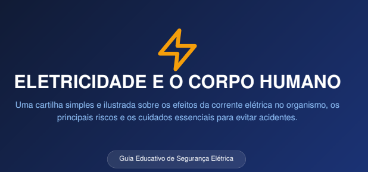
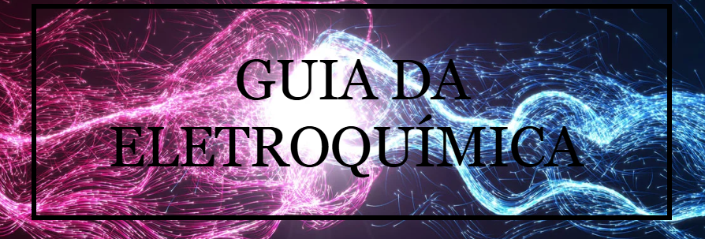
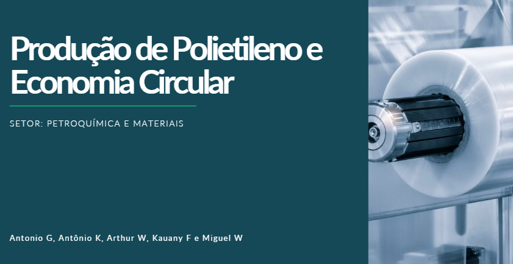
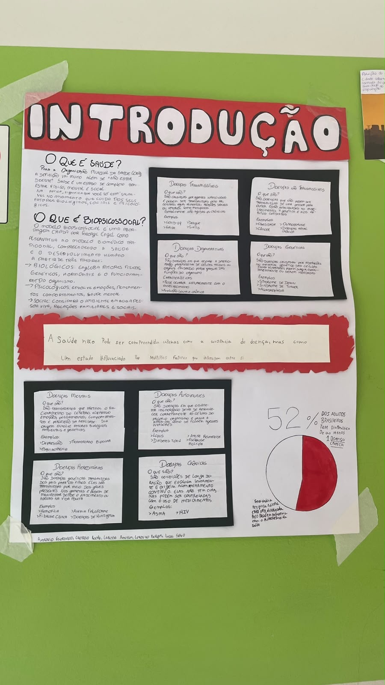

1º Trimestre
Meme sobre Evolucionismo

Descrição: Produção de um meme com temática evolucionista, relacionando o conceito de evolução com o avanço da tecnologia ao longo do tempo.
Habilidades desenvolvidas:
- C3: Analisar os impactos das ações humanas no ambiente, identificando causas e propondo soluções.
- H15: Comparar propostas de intervenção ambiental considerando riscos e benefícios.
- H18: Identificar situações de risco ambiental no contexto local.
Guerras e conflitos relacionados ao petróleo

Descrição: Produção de um material no Canva abordando conflitos geopolíticos relacionados à exploração e ao uso do petróleo.
Habilidades desenvolvidas:
- C1: Compreender as Ciências da Natureza como construções humanas ligadas à cultura.
- H1: Interpretar informações em diferentes formatos (textos, gráficos, tabelas, etc.).
- C2: Aplicar conceitos científicos para explicar fenômenos e resolver problemas.
- H9: Explicar conceitos de energia, matéria e transformação.
- H11: Utilizar práticas de investigação científica, como observação e análise de dados.
Relatório – Eletricidade por atrito

Descrição: Elaboração de um relatório sobre experimentos realizados em aula envolvendo eletricidade estática por atrito.
Habilidades desenvolvidas:
- C1: Compreender ciência e tecnologia como construções humanas.
- H1: Interpretar diferentes formas de informação científica.
- C2: Aplicar conceitos científicos na análise de fenômenos.
- H7: Compreender conceitos fundamentais da Química.
- H9: Explicar energia, matéria e suas transformações.
- H11: Utilizar o método científico (observação, experimentação e conclusão).
- H12: Relacionar informações para construção de modelos científicos.
2º Trimestre
Cartilha eletricidade e o corpo humano

Descrição: PDF sobre os efeitos da ELETRICIDADE no corpo humano
C1 - Compreender as ciências naturais e as tecnologias como construções humanas associadas à cultura dos povos e suas visões de mundo. H3 - Inferir significado de termos técnico-científicos em textos de instrumentação ou de divulgação científica. H4 - Identificar, em textos, diagramas, gráficos, imagens e tabelas, informações relevantes para compreender um fenômeno ou conceito relacionado às Ciências da Natureza. C2 - Aplicar os conceitos fundamentais e estruturas procedimentais das Ciências da Natureza na explicação de fenômenos cotidianos, bem como dominar processos e práticas da investigação científica. H12 - Relacionar informações para construir modelos em ciência e tecnologia. C4 - Compreender o funcionamento dos organismos vivos em geral e o ser humano em especial, considerando suas relações com o ambiente em que vivem, abordando aspectos físicos e socioculturais. H23 - Formular propostas de alcance individual ou coletivo, utilizando como critérios a preservação e a promoção da saúde individual e coletiva.
Portfólio digital de Eletroquímica

Descrição: Portfólio digital de eletroquimica feito no Google Sites
C2 – Aplicar os conceitos fundamentais e estruturas procedimentais das Ciências da Natureza na explicação de fenômenos cotidianos, bem como dominar processos e práticas da investigação científica. H7 – Compreender os conceitos relacionados à Química nos seus diferentes ramos: Fisico-química, Química orgânica e Química Geral. H9 – Explicar os conceitos de energia, matéria, vida e transformação para explicar fenômenos naturais e procedimentos tecnológicos. H11 – Empregar procedimentos e práticas de observação, levantamento de hipótese, experimentação, coleta de dados e conclusões para resolução de problemas relacionados às Ciências da Natureza.
Estequiometria

Descrição: Slides no canva sobre Polietileno e Economia Circular
C2 - Aplicar os conceitos fundamentais e estruturas procedimentais das Ciências da Natureza na explicação de fenômenos cotidianos, bem como dominar processos e práticas da investigação científica. H6 - Compreender os conceitos relacionados à Física em seus diferentes ramos: Astronomia, Mecânica, Acústica, Óptica, Termologia, Calorimetria, Ondulatória, Eletricidade, Magnetismo e Física Moderna e Nuclear. H7 - Compreender os conceitos relacionados à Química nos seus diferentes ramos: Físico-química, Química orgânica e Química Geral. H9 - Explicar os conceitos de energia, matéria, vida e transformação para explicar fenômenos naturais e procedimentos tecnológicos.
Ele

Descrição: Cartaz feito sobre a relação entre meio ambiente e saude.
C1 – H1 e H4 (Interpretação de informações e dados científicos) C2 – H11 e H12 (Investigação científica e construção de modelos científicos) C4 – H23 (Promoção da saúde individual e coletiva)